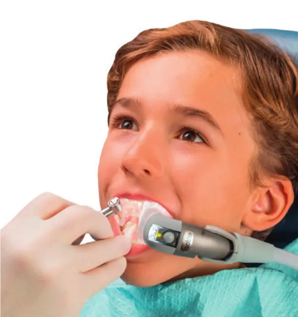

نسخه استخراجشده؛ ترجمه یا تأیید علمی انجام نشده است. وضعیت: captured
پسری ۶ ساله برای پالپوتومی مولر دوم شیری پایین آمده است. کار را با رول پنبه شروع کردهای؛ زبانش مدام جلو میآید، هر چند دقیقه میخواهد دهانش را بشوید و خون و بزاق روی حفره میریزد. رابردم اینجا چه چیزی را عوض میکند؟
در دندانپزشکی ترمیمی کودک، رابردم ابزار اصلی ایزولاسیون است و بیشتر ترمیمها و درمانهای پالپ زیر آن انجام میشود. مزیتهایی که در کودک پررنگترند:
پس از ترمیم هم میتوانی کار تمامشده را با رابردم در جا به والدین نشان دهی.
پیش از گذاشتن، رابردم را با چند جملهی ساده معرفی کن؛ مثلاً آن را «بارانی دندان» بنام تا ترس کودک کم شود. رابردم معمولاً پس از بیحسی موضعی گذاشته میشود و وقتی لثه بیحس است، کودک آن را راحت و کمحجم حس میکند.

دستگاههایی مثل Isolite و DryShield ساکشن، بایت بلاک و محافظ زبان و گونه را یکجا دارند و بیحسی نمیخواهند. برای دندان نیمهرویشیافته بهترند و وقت کمتری میگیرند؛ ولی سروصدا دارند و برخی کودکان احساس کشیدگی دهان یا عق زدن میکنند. رابردم از افتادن ابزار بهتر محافظت میکند، لثه را کنار میزند و تنفس بینی را نگه میدارد.
نکتهی طلایی: کودکی که بینیاش گرفته را با رابردم کامل رها نکن و بیرابردم هم کار را شروع نکن؛ اول یک سوراخ تنفسی دور از ناحیهی کار در ورق ببُر.